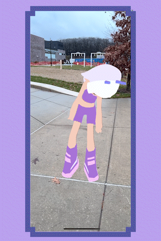

System Highlights

Character standing in augmented reality
Our core AR features use several capabilities from Niantic’s ARDK 3.0. For example, we used the Visual Positioning System (VPS) to create geospatial points for users to interact with instead of relying on raw GPS coordinates. VPS gave us sub-meter positioning accuracy by localizing against the user’s surrounding environment, while also allowing us to validate waypoints against Niantic’s existing “Wayspot” database, a collection of GPS-tagged real-world locations built from their player network. This gave us more reliable locations than querying GPS alone.
Using the VPS output, we built a dynamic waypoint layer that turned nearby Wayspots into interactable locations. At runtime, we queried for Wayspots within a configurable radius of the player, filtered the results based on our gameplay requirements, and continuously refreshed the available waypoints as the player moved through the environment.
ARDK 3.0 also allowed us to generate a real-time mesh of the environment from the device camera, which we used for depth occlusion. This was important for our AR interactions with the language-learning characters because we needed virtual objects to correctly interact with and appear behind real-world geometry. Since the mesh takes a few seconds after the session starts to reach a usable confidence level, we gated object visibility once mesh confidence crossed a threshold. For a smooth transition, we used the dissolve shader shown below to bring the objects into the “real world” instead of having them suddenly pop into view.
Characters dissolve in and out using procedural Simple Noise combined with an animated threshold. The noise pattern is remapped and multiplied before being passed through a Step node and Alpha Clip Threshold, progressively revealing or hiding the characters. We also added a configurable edge width and color to highlight the boundary of the dissolve, creating a digital transition that helps the virtual characters feel like they are holographically entering and leaving the real world.

Since there were no suitable APIs for step counting, I wrote a own simple pedometer using the mobile device's accelerometer to detect steps by comparing the magnitude of the acceleration vector against a fixed threshold each frame. To prevent overcounting, a boolean flag was implemented to prevent another step from being counted while the acceleration remained above the threshold. Notably, through testing, we found that this fixed threshold detection on raw accelerometer data is sensitive to how the phone is carried. Carrying the phone in hand versus in a pocket produces different acceleration profiles, so the same threshold does not generalize well across different carrying positions. A smoothing filter or adaptive threshold based on recent motion history would be a more robust next step.
void Update() { Vector3 acceleration = Input.acceleration; float accelerationMagnitude = acceleration.magnitude; if (accelerationMagnitude > StepThreshold) { if (!isStepDetected) { stepCount++; isStepDetected = true; } } else { isStepDetected = false; } }